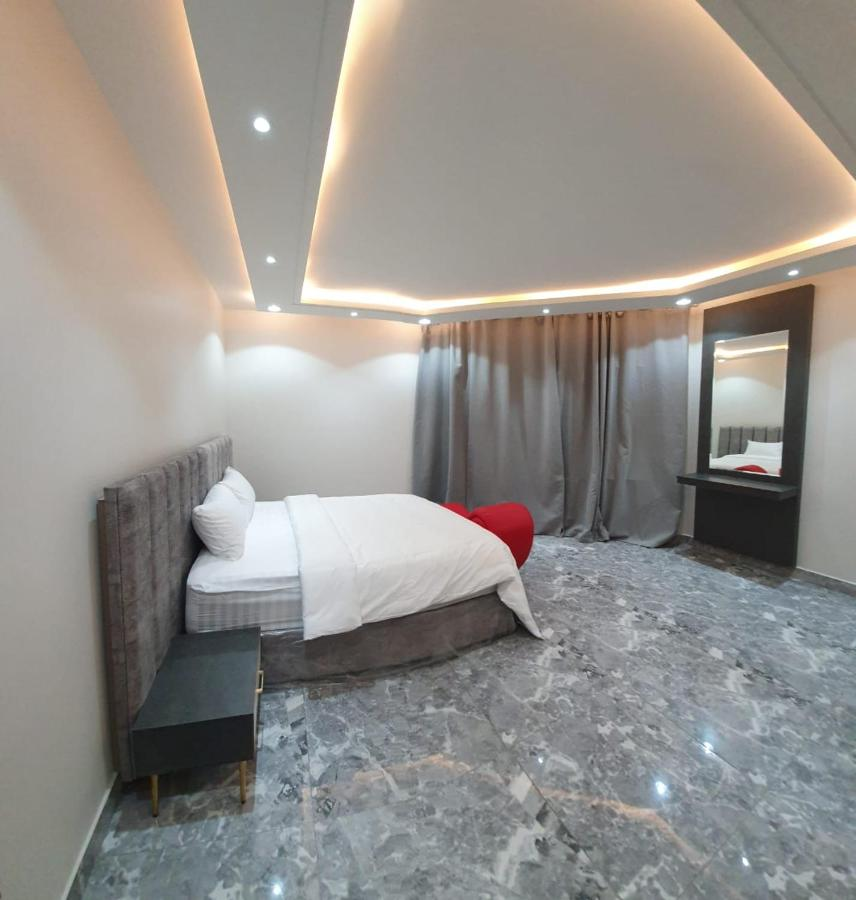

Blue inn Boutique
Featuring a terrace, Blue inn Boutique is located in Abha in the Asir Province region,
1.8 km from Muftaha Palace Theatre and 2.3 km from Muftaha Palace Museum.
Among the facilities of this property are a restaurant, a 24-hour front desk and room service, along with free WiFi throughout the property.
The hotel features an indoor pool, fitness center and a shared lounge.
All guest rooms are equipped with air conditioning,
a flat-screen TV with satellite channels, an electric tea pot,
a bidet, bathrobes and a closet. The hotel provides some units with city views,
and all rooms have a coffee machine. All rooms feature a private bathroom, slippers and bed linen.
Blue inn Boutique offers a buffet or halal breakfast.
The property has an on-site hot tub, hairdresser's and business center.
Agrab Market is 2.4 km from the accommodation, while Abha Cultural Arena is
2.6 km away. The nearest airport is Abha, 20.9 km from Blue inn Boutique,
and the property offers a paid airport shuttle service.
Blue inn Boutique has been welcoming Booking.com guests since Sept 13, 2018
Al Rahaa Furnished Units is located in Abha and provides accommodations with a
shared lounge and free WiFi, 5.6 km from Al Sa'ada Park and 9.7 km from King Khalid University.
All units here are air-conditioned and feature a flat-screen TV, a living room with a sofa,
a well-equipped kitchen with a dining area, and a shared bathroom with shower, slippers and free toiletries.
Al Salam Theme Park is 11.3 km from the condo hotel, while Agrab Market is 12.9 km away.
The nearest airport is Abha Airport, 6.8 km from Al Rahaa Furnished Units.
Al Rahaa Furnished Units has been welcoming Booking.com guests since May 14, 2018

Gold Guan Hotel Located in Abha in the Asir Province region, with Al Rehana Mall and Al Andalus Park nearby, Gold Guan Hotel provides accommodation with free private parking.
All units are equipped with air conditioning, and some have a flat-screen TV, washing machine, a kettle, completed with a kitchen.
Agrab Market is 1.1 km from the aparthotel, while Al Salam Theme Park is 2.4 km away. The nearest airport is Abha Airport, 14 km from Gold Guan Hotel .
Gold Guan Hotel has been welcoming Booking.com guests since 16 May 2021.
Abha Elite Residential Units
Located within 2.2 km of Abu Khayal Garden Park and 2.6 km of Muftaha Palace Theatre,
Abha Elite Residential Units provides rooms in Abha. Among the facilities at this property are
a 24-hour front desk and room service, along with free WiFi throughout the property.
The hotel features family rooms.
All units in the hotel are equipped with a kettle. Every room has air conditioning,
wardrobe and a flat-screen TV, and certain units at Abha Elite Residential Units have a balcony.
At the accommodation all rooms include a seating area.
Guests at Abha Elite Residential Units can enjoy a à la carte breakfast.
Popular points of interest near the hotel include Al Rehana Mall,
Al Andalus Park and Agrab Market. The nearest airport is Abha Airport, 15 km from Abha Elite Residential Units.
Couples particularly like the location — they rated it 8.0 for a two-person trip.
Abha Elite Residential Units has been welcoming Booking.com guests since 18 Apr 2021.
Golden Tulip Abha Hotel
Set in Abha, 800 m from Waterfall Park, Golden Tulip Abha Hotel offers accommodation with a bar,
free private parking, a shared lounge and a garden. Among the facilities at this property
are a 24-hour front desk and room service, along with free WiFi throughout the property. The hotel has family rooms.
All guest rooms at the hotel come with a seating area, a flat-screen TV with cable channels,
a kitchenette, a dining area and a private bathroom with bathrobes, a bidet and slippers.
Golden Tulip Abha Hotel provides some units that include a patio, and all rooms are fitted with a kettle. All units feature bed linen.
Popular points of interest near the accommodation include Abha Cultural Arena,
Abha Mall and Muftaha Palace Theatre. The nearest airport is Abha Airport, 17 km from Golden Tulip Abha Hotel
Couples particularly like the location — they rated it 8.6 for a two-person trip.
Golden Tulip Abha Hotel has been welcoming Booking.com guests since 1 Jul 2021.
Azd Hotel is located in Abha, 2 km from Agrab Market and 2.7 km from Waterfall Park.
Among the facilities of this property are a restaurant, a 24-hour front desk and room service,
along with free WiFi throughout the property. The accommodation provides a shared lounge, an ATM and organising tours for guests.
Rooms are complete with a private bathroom, while certain rooms at the hotel also offer a seating area.
Continental and buffet breakfast options are available daily at Azd Hotel.
At the accommodation guests are welcome to take advantage of a Turkish bath.
Guests can make use of the business centre or relax in the snack bar.
Popular points of interest near Azd Hotel include Muftaha Palace Theatre, Muftaha Palace Museum and Abha Cultural Arena.
The nearest airport is Abha Airport, 21 km from the hotel.Couples particularly like the location —
they rated it 8.7 for a two-person trip. Azd Hotel has been welcoming Booking.com guests since 19 Nov 2017.
High City Villas VIP Boasting a restaurant, a bar, and a garden, High City Villas VIP features accommodation in Abha with free WiFi and city views. This villa offers free private parking and room service.
The air-conditioned villa consists of 2 separate bedrooms, 5 bathrooms with bathrobes and slippers, and a seating area. The kitchen features a dishwasher, a microwave and a fridge and there is bidet with a hairdryer and free toiletries.
The villa offers a terrace. A car rental service is available at High City Villas VIP.
Popular points of interest near the accommodation include Abu Khayal Garden Park, Muftaha Palace Museum and Muftaha Palace Theatre. The nearest airport is Abha Airport, 17 km from High City Villas VIP.
Couples particularly like the location — they rated it 10 for a two-person trip.
High City Villas VIP has been welcoming Booking.com guests since 16 Apr 2021.
Qimam Park Hotel Apartments Set within 4.4 km of King Khalid University and 5 km of Al Sa'ada Park, Qimam Park Hotel Apartments offers rooms in Abha.
Among the facilities at this property are a 24-hour front desk and room service, along with free WiFi throughout the property.
The hotel has family rooms.All rooms at the hotel come with a seating area. Complete with a private bathroom fitted with a
bidet and slippers, all guest rooms at Qimam Park Hotel Apartments have a flat-screen TV and air conditioning, and selected rooms
also offer a patio. At the accommodation all rooms include bed linen and towels.
Al Salam Theme Park is 9 km from Qimam Park Hotel Apartments while Abha Mall is 10 km from the property.
The nearest airport is Abha Airport, 8 km from the hotel.
Couples particularly like the location — they rated it 8.6 for a two-person trip.
Qimam Park Hotel Apartments has been welcoming Booking.com guests since 3 Feb 2022.
Radiance Grand Hotel Set in Abha, 6 km from King Khalid University, Radiance Grand Hotel offers air-conditioned rooms and a bar. Among the facilities at this
property are a 24-hour front desk and room service, along with free WiFi throughout the property. The hotel features family rooms.
At the hotel, each room is fitted with a balcony. All rooms are equipped with a kettle, while selected rooms here will provide
you with a kitchenette with a microwave, a fridge and a minibar. The units in Radiance Grand Hotel are equipped with a flat-screen TV and bathrobes.
Al Sa'ada Park is 6 km from the accommodation, while Al Salam Theme Park is 10 km away. The nearest airport is Abha Airport,
9 km from Radiance Grand Hotel.
Couples particularly like the location — they rated it 8.2 for a two-person trip.
Radiance Grand Hotel has been welcoming Booking.com guests since 9 Jul 2021.
In front of Al Rashid Mall
Set in Abha, within 1.4 km of Al Sa'ada Park and 2.9 km of King Khalid University, A - 369 In front of Al Rashid Mall offers accommodation with free WiFi, air conditioning, a bar and a garden. This apartment offers free private parking and a 24-hour front desk.
The apartment features 3 bedrooms, a flat-screen TV with satellite channels, an equipped kitchen with a microwave and a fridge, a washing machine, and 2 bathrooms with a bidet.
The apartment offers a terrace. A barbecue is available on site and hiking can be enjoyed within close proximity of A - 369 In front of Al Rashid Mall.
Al Salam Theme Park is 6 km from the accommodation, while Al Rehana Mall is 8 km away. The nearest airport is Abha Airport, 7 km from A - 369 In front of Al Rashid Mall.
A - 369 In front of Al Rashid Mall has been welcoming Booking.com guests since 25 Nov 2020.